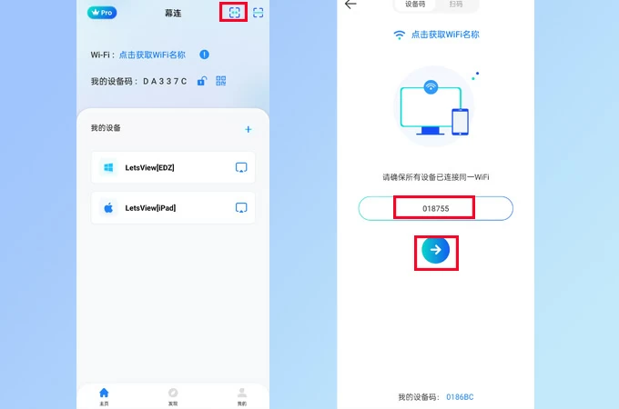
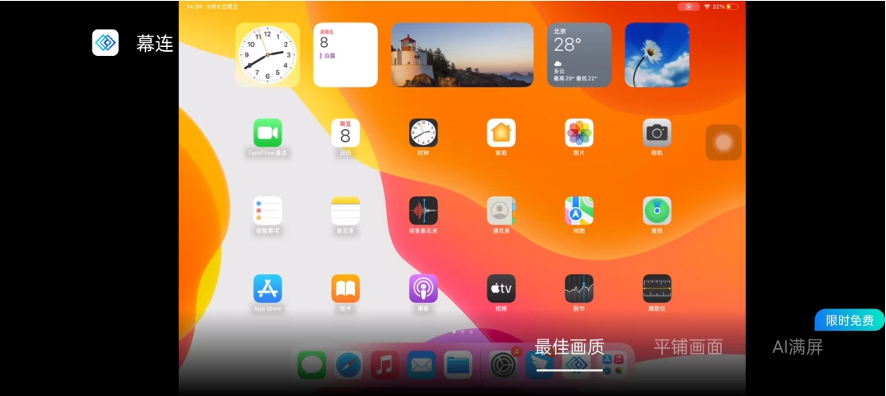

一根没有线的 HDMI：LetsView 从 0 到跑通的五分钟上手指南
完全不懂投屏也没关系——这篇从最生活化的类比讲起，带你五分钟跑通第一次投屏，再挑三个新手最值得先碰的功能，最后解答小白最常踩的三个坑。
这篇能带你从「投屏是什么都不知道」到「自己就能把手机画面投到大屏上」，不需要任何基础，跟着走就行。
它到底是干嘛的
你可以把 LetsView 想象成一根没有线的 HDMI。
平时想把手机里的照片给家人看，得凑在小屏幕上挤脑袋；想把电脑上的 PPT 投到会议室的电视，翻半天找不到合适的转接线；小朋友想在电视上画画，找不到合适的 App——LetsView 就是为这些场景准备的：只要手机、电脑、电视都装一个 App，连同一个 Wi-Fi，画面就能在它们之间自由飞。
它不挑设备——安卓、iPhone、Windows、Mac、Android TV 全能互通——而且基础功能完全免费，更多细节在LetsView官网上都能找到。

五分钟上手：从下载到第一次投屏
别担心，不需要注册账号，也不用填任何信息，整个过程就是装 App → 找设备 → 点一下。
第一步：两边都装 LetsView
手机装一个，电脑或电视也装一个。手机去应用商店搜就能找到，电脑和电视的安装包从官方下载拿就行。装完先别急着打开，等两边都就绪了再一起启动。
第二步：确保在同一个 Wi-Fi
这是最关键的前提。如果手机连的是家里 5G、电脑连的是 2.4G，通常没问题；但如果一个连家里路由器、一个用手机热点，那它们彼此看不见——投屏这回事，同一网络是基础。
第三步：手机端搜设备并连接
打开手机端 LetsView，底部自动扫描附近的设备。几秒钟后，你会看到电脑或电视的名字出现在列表里——点它，再点「共享本机屏幕」，手机画面就出现在大屏上了。
就是这么简单。整个流程从装完 App 到看到画面，正常情况下不超过五分钟。
上手后先玩这三个功能
跑通第一次投屏后，别觉得就用完了。这三个功能是新手最值得先碰的，每个都能让你惊呼一声「原来还能这样」。
功能一：反向投屏——把电脑投到手机上
大多数人以为投屏只能手机投大屏，但 LetsView 反过来也能投。打开手机端，选到你的电脑设备后，别点「共享本机屏幕」，而是点「获取对方屏幕」——电脑上的实时画面立刻缩小到手机里。
想想看，人在沙发上想瞄一眼电脑上的下载进度，或者躺床上操作主机里的游戏，这个功能直接能用。配合手机端的手指和键盘图标，你甚至能用手机反控电脑。
功能二：投屏后的三种画面模式
手机投电视后最常遇到的问题是「怎么有黑边」。按一下电视遥控器的方向键，底部会出现三种画面模式：最佳画质、平铺画面、AI 满屏。
- 最佳画质是默认模式，画面比例不变，黑边该有就有——适合投电影，不想看到字幕被裁掉的话就用这个。
- 平铺画面会把画面拉伸铺满整个屏幕，代价是会变形——人脸和圆形物体会被压扁，一般不推荐。
- AI 满屏是官方推荐的投视频选项，它等比例放大画面铺满屏幕，边缘可能被裁掉一点但不会拉伸变形，观感最好。
投竖屏内容（手机游戏、短视频）到横屏电视时，三种模式的差别最明显——你可以三种都试一下，自己觉得舒服就好。
功能三：小画板——手机涂鸦实时同屏到大屏
打开手机端 LetsView，切到底部「发现」页，里面有一个容易被忽略的组件叫小画板。点进去就是一块画布，手机变成画板，你画的每一笔实时同步到大屏上。
笔刷有几种类型可选，粗细三档，颜色也有多色。顶部的撤销按钮让你画错可以回退一步，画完还能保存。
它不是专业绘画工具——笔刷少、没有图层，但它的价值在于即时同屏这个链路：给小朋友当涂鸦玩具，或者线上课堂画个流程示意图，画的东西立刻出现在电脑上，这种反馈是非常直观的。想了解更多功能的参数和细节，去LetsView文档里翻就行。

小白的三个常见疑问
Windows 版打开就闪退怎么办
这是 Windows 用户最常遇到的问题，别慌，八成不是软件坏了，是运行环境缺东西。按下面三步走：
- 装 .NET Framework 4.7 或更高版本——幕连 Windows 端依赖这个运行库，系统里没装或版本太低时，程序启动立刻就退。Win10/Win11 通常自带，但老一些的系统（Win7、早期 Win10）最容易踩这个坑。
- 更新到最新版客户端——从官方渠道重新下载最新版本覆盖安装，旧版本的兼容问题往往在新版里已经修复。
- 更新显卡驱动——以上两步都做完还闪退的话，检查显卡驱动。投屏画面渲染依赖显卡，驱动过旧或损坏会引发渲染层崩溃。到 NVIDIA/AMD/Intel 官网或用系统设备管理器更新就行。
三步都做完还不行？主界面右上角点【三】→【问题反馈】，把日志提交给官方，他们会处理。
投屏搜不到对方设备
先确认两边是不是真的在同一个 Wi-Fi 里——别一个连家里路由器、一个用手机热点。确认没问题后，试试把两边的 LetsView 都关掉再重新打开，或者关掉手机 Wi-Fi 再开一次。极端情况下，手机连电脑的热点反而能连上，这是最后的兜底方案。
投屏有声音没画面，或者画面发糊
画面发糊通常是清晰度不够，去电脑端设置里找清晰度调节，把档位调高就行。有声音没画面或画面卡住，一般是网络信号问题——路由器离得远、隔墙太多，都会让投屏体验变差，试试把设备挪近一点，或者换个干扰少的信道。
最后说一句
LetsView 的厉害之处不在于它有多少高级功能，而在于它把一件本来很麻烦的事（跨设备传画面）做得特别简单——不用插线、不用配置、不用登录，装完就能用。
入门后可以继续探索电脑和电脑互投、手机反控电脑这些进阶玩法。你会发现，当设备之间的墙被拆掉之后，很多之前觉得麻烦的事，突然就变得顺手了。这份文档的原始资料在GitHub、Gitee和GitCode三个仓库都同步维护着，国内访问哪个快就连哪个。